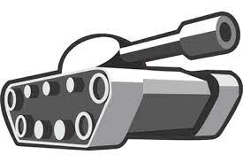

This past spring, two of my classmates at Macalester College (Elisa Avalos and Sydney Ohr) I decided create a replica of the game Tank Trouble for our Object-Oriented Programming and Abstraction class.
About the Game
Tank Trouble is a one versus one game where players navigate a complex maze and fire bullets to destroy the other tank. Each player gets gets five bullets and no reloads. After you shoot, bullets don’t disappear from the screen so be careful! Each time you destroy the other persons tank you get a point and first person to ten points wins!

Design Rationale
In the development of Tank Trouble, we have prioritized clarity and organization. At the core of our design is the GameManager, which manages various aspects of the game, including handling collisions between in-game objects, tracking player points, and start and stop screens. The TankTroubleGame class (main) serves as the engine of the game that combines all components of the project. Our MazeManager class is responsible for generating the maze with walls that act as barriers within the game world. Throughout the development process, we committed to making clean and organized code to ensure easier maintenance and debugging of the game.
Here is one of our initial class diagrams:

Object-Oriented Programming Concepts
Our team embraced essential object-oriented programming principles to create a well-organized and flexible codebase. We applied the principle of encapsulation by centralizing game management within the GameManager, which promotes data integrity and effective data management. The use of inheritance established a clear hierarchy among game elements, with Wall inheriting from Rectangle, enabling efficient game logic expansion and maintenance. We leveraged the principle of polymorphism to ensure that objects like Walls and Balls share a common interface for collision detection, facilitating code reuse and adaptability.
Challenges
Getting Tank to Move
To achieve smooth tank movement in Tank Trouble, a fundamental challenge was converting XY coordinates to polar coordinates. The tanks’ movement is controlled using directional input or angles. These angles are typically represented in polar coordinates, where the direction and distance from a reference point (the tank’s current position) are used to determine the tank’s new position.
By converting XY coordinates to polar coordinates, the game can effectively interpret user input or predefined movement commands. For example, if a player presses a key to move the tank forward, the game can calculate the corresponding polar coordinates (angle and distance) and update the tank’s position accordingly. This conversion simplifies the navigation logic, making it easier to control the tank’s movement and direction within the game’s maze-like environment.
Getting Tank to Shoot
Achieving precise and consistent tank shots in Tank Trouble posed a significant challenge due to disparities between the angle input from the tank and the actual angle at which the ball was fired. Initially, shots would often veer off in unexpected directions, leading to frustration for players (and the developers). To rectify this issue, a meticulous process was undertaken to align the ball’s firing angle with the tank’s cannon orientation.
This process involved extensive testing and experimentation to determine the correct transformation needed to match the tank’s input angle to the ball’s trajectory angle. Spawned lines were used to estimate the ball’s path, enabling developers to fine-tune the transformation process. The breakthrough came in the form of a transformation factor of 1045 * π * (angle given by the tank), which bridged the angle disparity effectively.
:::
Additionally, adjustments to the distance (r) at which the ball was spawned from the tank’s center were made through trial and error. This comprehensive approach ensured that tank shots in Tank Trouble were not only accurate but also consistent, allowing players to strategize and engage in thrilling tank battles within the maze environment.
Getting Wall and Tank Collision
To ensure basic game functionality, we had to develop a reliable collision detection system between the tanks and the walls. To address this, we pinpointed critical locations around the tank to cover the tank’s entire surface: the cannon’s tip and the tank’s four corners.
We methodically evaluated each point along the line connecting these designated reference points. Whenever one of these points intersected with a wall element, we implemented a mechanism to halt vertical tank movement, effectively putting a stop to forward and backward tank motion.
Demo
Known Issues
Corner Glitch: Occasionally, players can exploit a corner glitch where tanks partially overlap walls allowing balls to pass through corners.
Ball Escape: Rarely, balls fired during gameplay may exit the maze when the canvas resets between rounds, leading to unexpected outcomes.
Instant Self-Kill: There’s a specific scenario where Player 2 can instantly lose a round if a ball spawns in a particular location.
Rapid Ball Fire: Shooting a ball during the round transition may result in immediate ball firing, catching players off guard.
Performance Impact: Having too many balls on-screen, especially during intense moments, may strain the program’s performance, potentially causing crashes or reduced responsiveness.